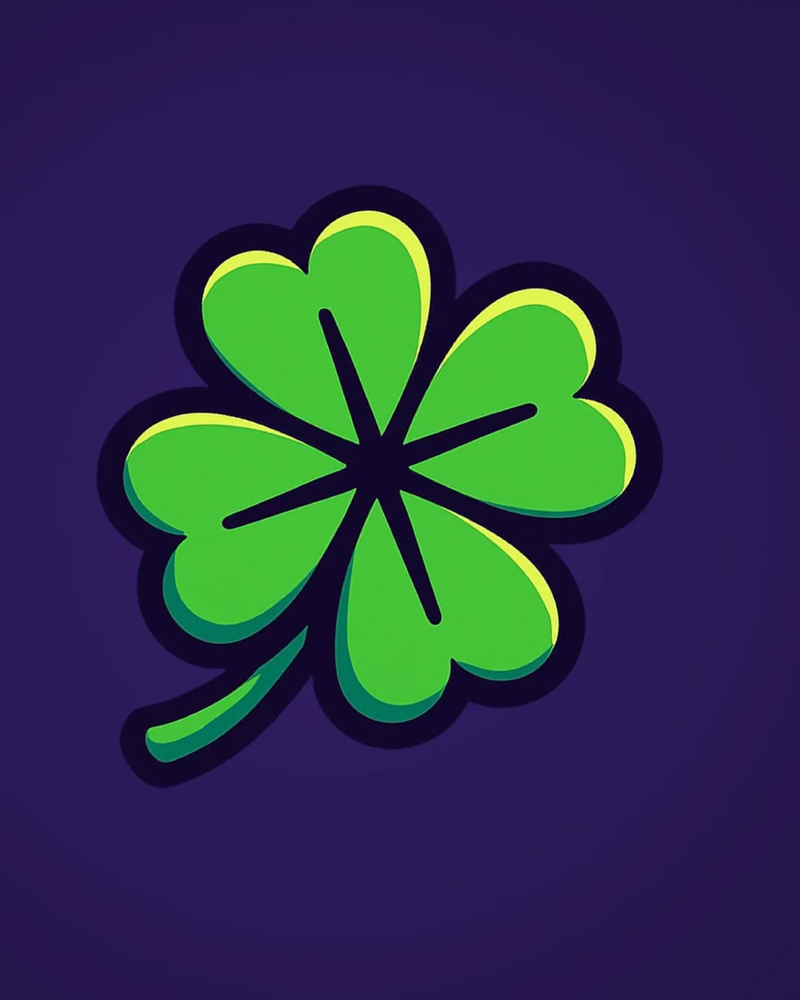

Case · Edits, identidade visual e link na bio
DeLuccky

Sorte é treino que ninguém viu.
DeLuccky é streamer de CS2 (@deluccky_). O trevo de quatro folhas virou a marca inteira: sortudo, preciso e divertido, com roxo noite, verde trevo e tudo em estilo sticker. A mesma identidade veste as edits do YouTube, o overlay da live e a página do link na bio.
- Cliente
- DeLuccky · @deluccky_
- Segmento
- Streamer de Counter-Strike 2
- Entregas
- 5 edits de gameplay, identidade visual com guia da marca, página de link na bio
- Ano
- 2026
01 · Edits para o YouTube
Jogadas que viram vídeo.
Cinco edits de CS2 com cortes no ritmo da música. Escolha uma na lista e ative o som.
02 · Identidade visual
Quatro camadas, um trevo.
O guia da marca em 16 páginas. Use as setas, arraste para o lado ou toque numa miniatura.
03 · Link na bio
Tudo num link só.
YouTube, Twitch, TikTok, Instagram e o setup do streamer numa página feita para abrir no celular.
O próximo projeto pode ser o seu!
Entre em contato pelo canal que preferir.